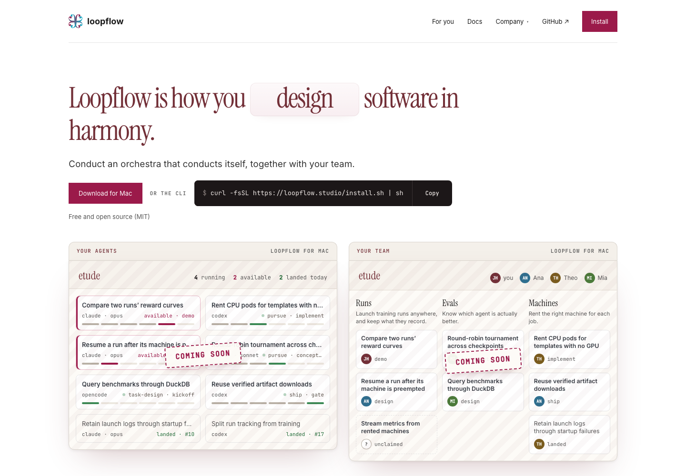
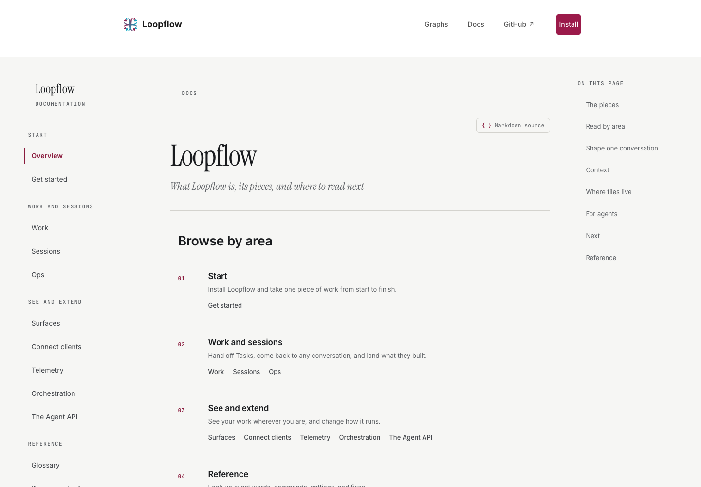
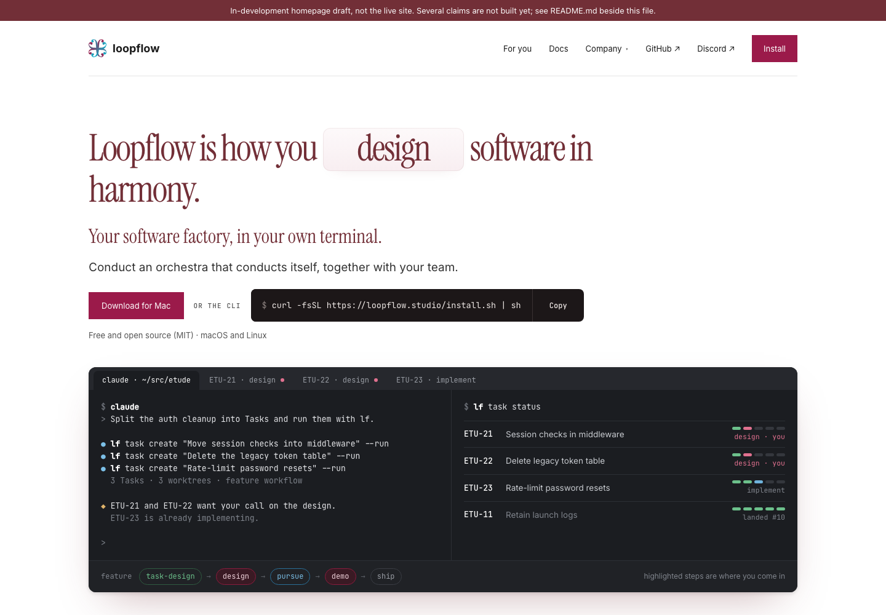
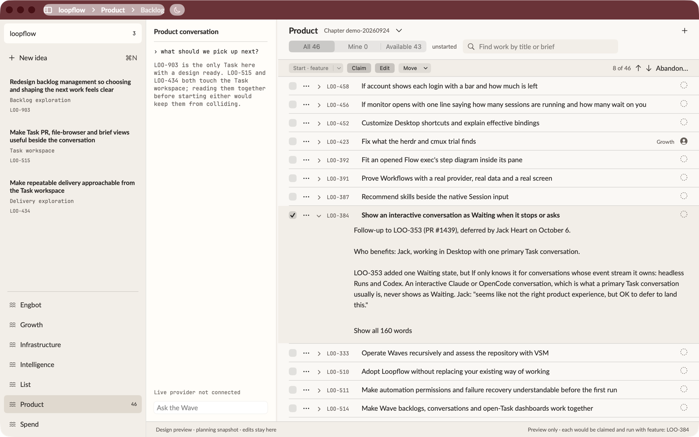

Where Loopflow's design looks generated, and where it doesn't
Loopflow avoids the loud tells: no gradients, glow, glass, icon tiles or fake metrics on any surface. What gives it away is quieter. Small capital labels are everywhere, monospace is used as decoration, the type and radius scales exist but are bypassed, and the website draws pictures of an app instead of showing it.
Checked against the Impeccable slop catalog, MengTo's pattern library and Paralect's 21 signs. Website: source plus rendered screenshots of loopflow.studio and the homepage draft. Mac: source plus two live windows. iPhone: source only, not seen running.
Scorecard
| Measure | Website | Mac | iPhone |
|---|---|---|---|
| Font sizes used / in the documented ramp | 46 / none | 20 / 6 | 8 / 6 |
| Text under the size floor | 10–11.5px, 9 rules | 62 calls under 11pt, floor 8pt | none under 12pt |
| Corner radii used / in the scale | 12 / 4 | 7 / 4 (most used, 6, is not in it) | 5 / 4, tokens unused |
| Uppercase label rules | 14 | 9 shared uses + 4 hand-made variants | 0 |
| Colors outside the declared set | about 60 hex values | 21 literals vs 620 palette uses | 0 |
| Faces | Instrument Serif, Inter, JetBrains Mono | Cormorant, Lato, JetBrains Mono, plus SF in 75 calls | Lato, Cormorant once, SF Mono for diffs |
| Gradients, glass, glow, emoji, icon tiles | 3 soft gradients | 1 glass status light | none |
Website

Reads as generated
- Drawings of the product. Two invented dashboards with invented teammates in initials circles, a diagonal stripe wash and a rotated stamp. This is the largest thing on the page and none of it is real.
- Capital mono labels: "Your agents", "Loopflow for Mac", "Or the CLI", "Works with", and on the docs page six more in one screen.
- The rotating headline word in a gradient chip with a drop shadow. It loops forever and makes the headline unreadable as a sentence.
- A stripe on rounded cards and pulsing green dots inside the drawings.
- Inter with a condensed display serif on white. This pairing is what the catalogs call the current default. Nothing here says Loopflow with the logo covered.
- Mono for links ("Tasks and Waves ↗") and captions.
- A demo made of text. Six paragraphs explain Tasks and Waves beside a small card.
- Em-dash pairs in three of the first six paragraphs.
Shows care
- The dark terminal blocks: real commands, plain comments, one accent color.
- Copy with a voice and claims a reader can check.
- Square primary button, visible focus rings, 44px targets, reduced-motion handling, an accessibility test suite.
- No testimonials, logo wall, metrics or pricing theater.


design/homepage-next. Its hero shows an agent driving lf beside lf task status. This is the direction: the product as the picture. It still needs to be a recording of a real run.Loopflow for Mac

Reads as generated
- Sidebar rows carry too much and clip it: "LOO-515 Block… #1949 Jack…". The summary is prose set in monospace.
- Every sidebar row has a colored stripe, status or not.
- Type is off its own ramp: 20 sizes against 6 documented, half-points 24 times, text as small as 8pt in the activity view.
- Capital section labels are built into the system (
WorkSectionHeading) and re-made by hand four more ways. - Four button shapes in one window: the green Auto-Ship, grey Claim/Edit, a segmented filter, a capsule in New Task.
- Three typefaces plus SF in one view;
.greenand.redin the PR view skip the tested palette. - Bugs that read as carelessness: "New conversation; earlier one left behind" overlaps terminal text; the breadcrumb pill collides with the theme button in the backlog preview.
Shows care
- The burgundy title bar over cream is the one recognizable Loopflow image.
- Role-based palette, 24 themes, contrast tested in every one.
- Four shadows in the whole app, no blur, one guarded animation.
- Status as words and shape; quiet states show nothing.
- Jump-bar breadcrumbs, stable ⌘1–9 slots, focus ring that survives selection.

Loopflow for iPhone
Reads as generated
- Stock SwiftUI recolored. It shares the palette with the Mac app and nothing else: no ramp, no shared components,
SpacingandCornerRadiusnever used. - A landing-page hero inside an app: "Your work, within reach." over three icons, with connecting explained four times.
- A desktop toast as the only error surface: 12pt, one line, so the half that says how to recover is cut off.
- Generated empty states: "No ready for you Tasks".
- A first load that fails shows a blank list.
Shows care
- A reply field instead of typing into a terminal, with a 7-key row for provider menus.
- "Latest" only when scrolled up; no status chrome on a healthy Session.
- Terminal text scales with Dynamic Type.
- Errors name the cause and the fix; drafts autosave.
- None of the catalog's visual tells at all.
What to fix first
- Replace the hero drawings with the real product. It is the first thing anyone sees and the least true. The draft hero is most of the way there.
- Delete the capital labels, everywhere. About 30 rules across two surfaces, and the Mac ones are a shared component, so one change removes most of them.
- Close the type helpers.
Typography.body(12.5)is how 20 sizes happened. Make the ramp the only way to get a font, then fix what breaks. Same for radius. - Redesign the sidebar Task row. It is the most-looked-at element in the product and it truncates, stripes and sets prose in mono.
- One site. One nav, one button, one ground for home and docs.
- One family across surfaces. The site and the apps use different serif and sans faces today. Decide this as part of the new language, not before.
Elements worth obsessing over
Candidates for the few things that should be unmistakably Loopflow and set the bar for everything else.
| Element | Why this one |
|---|---|
| The Task row | Seen hundreds of times a day on Mac, phone and (as lf task status) in the terminal. One row design that works in all three is a signature. |
| The workflow line | Steps with the stops that are yours. It already appears five ways (three Mac renderers, the site card, the draft's footer). It is the product's central idea and has no settled form. |
| The terminal block | Already the best thing on the site. Worth defining exactly: prompt, command, comment, output, one accent. |
| "Needs you" | The one moment the app is allowed to be loud. What it looks like decides how quiet everything else can be. |
| The title bar and jump bar | The current identity carrier on Mac. |
| The status mark | Two languages today (flat dot, glass lens). One mark, with shape as well as color. |
Design languages to explore next
Six starting points, deliberately far apart. Each would be shown as the same three things: the Task row, the workflow line and the homepage first screen.
| Direction | What it is | Risk |
|---|---|---|
| Score | Take the musical vocabulary literally: engraved-score typography, staff rules as the layout grid, a workflow drawn as a line of music with rests where you come in. Black on paper, burgundy for the conductor's marks only. | Tips into costume. |
| Terminal-native | The whole product is set in one excellent monospace on the user's own theme, laid out on the character grid. The app is a very good TUI with a native frame. | Looks like every dev tool that tried it; needs exceptional spacing to work. |
| Instrument panel | Hardware, not paper: labeled controls, fixed positions, a meter per Task. Engraved type, one signal color per state, nothing rounded. | The air-traffic dashboard the old doc warned about. |
| Wine and ink | Keep what works on Mac and commit to it: burgundy as a ground instead of an accent, one humanist sans, no serif at all, no cream. | Least new. |
| Print shop | Editorial, but by structure instead of italic serifs: a strict column grid, rules, large numerals, one grotesque in two weights. The /studio page taken seriously. | Close to the current default for "tasteful". |
| Native and nothing else | System font, system materials, system controls on macOS 26 and iOS; all identity in the icon, the words and one accent. | No identity on the web. |
What changed in the repository
DESIGN.mdat the root is now the one design document. It leads with what to avoid, grouped by what Loopflow does today (with file pointers), states how a value becomes a token, and lists the tokens the code ships, including where the site and apps disagree.VISUAL_DESIGN.mdandswift/DESIGN.mdare deleted. The Desktop semantics and Work tracking sections moved over word for word. The marketing token tables (which described Cormorant, Lato and cream for a site that ships Instrument Serif, Inter and white) and the 400 lines of research quotes did not.- No UI code changed.